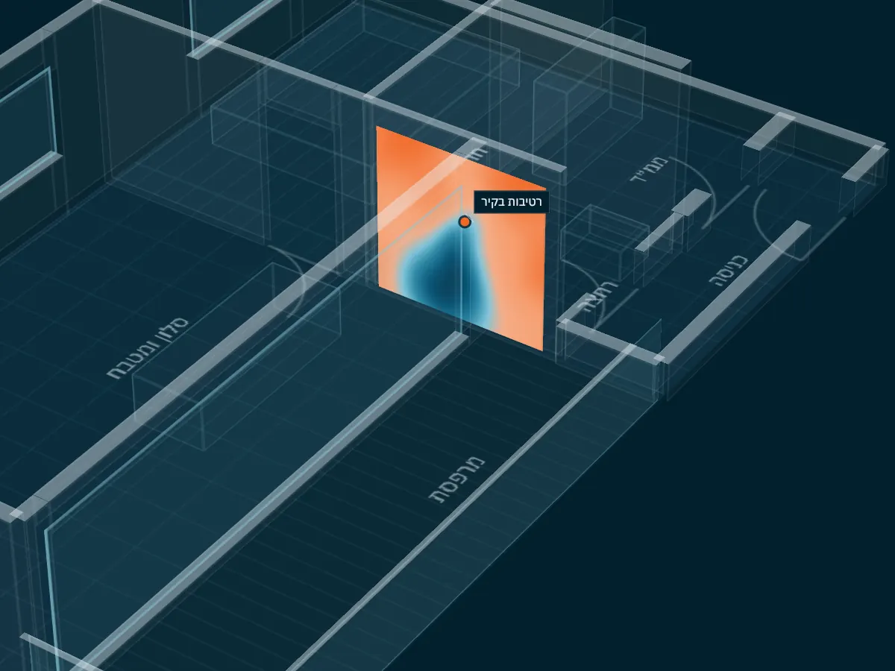

בדיקהנגדית
כשכבר יש דוח או חוות דעת על הנכס, והקבלן, חברת הביטוח או הצד השני מציגים תמונה אחרת, צריך בדיקה עצמאית. רביד בוחן את הנכס ואת המסמך הקיים, ובודק כל טענה לגופה.
מתי צריך בדיקה נגדית
בדרך כלל כשיש מחלוקת: הקבלן דוחה את הממצאים של בדק הבית, הצד השני מציג חוות דעת משלו, או שיש לכם ספק בדוח שקיבלתם.
הבדיקה הנגדית לא מתחילה מאפס. היא יוצאת מהמסמך הקיים: מה נטען בו, על מה הוא נשען, ומה רואים בפועל בנכס.
- מה מביאים
- הדוח או חוות הדעת הקיימים
- מה מקבלים
- התייחסות מנומקת לכל ממצא, עם תיעוד
- לשימוש מול
- קבלן, חברת ביטוח או בית משפט
איך זה עובד
ארבעה שלבים, מהמסמך שיש לכם ועד התייחסות מקצועית אליו.
- קוראים את המסמך הקייםמה נטען בו, על מה זה נשען, ומה חסר.
- בודקים את הנכסכל ממצא נבדק בשטח, עם מצלמה תרמית ומד לחות כשצריך.
- מעמידים ממצא מול ממצאאיפה הדוח הקיים מדויק, איפה לא, ולמה.
- כותבים התייחסות מנומקתבנוסח של חוות דעת מומחה, כשצריך להגיש אותה.

קודם בודקים את הנכס.
בדרך כלל שעתיים עד שלוש בדירה, לפי הגודל. עם מצלמה תרמית ומד לחות, מול התוכניות והמפרט.
אחר כך כותבים דוח.
ההתייחסות עוברת על הממצאים אחד אחד, עם תיעוד והסבר לכל מקום שבו התמונה שונה.
ואז עוברים עליו יחד.
רביד מסביר מה המשמעות של כל ממצא, ומה עושים איתו.
ונשארים זמינים גם אחרי.
לשאלות, להתייעצות ולליווי מול הקבלן או המוכר. אחרי התיקונים אפשר לתאם גם בדיקה חוזרת.
שאלות על בדיקה נגדית
אני הקונה, והקבלן הביא חוות דעת משלו. זה בשבילי?
כן. בדיקה נגדית נועדה בדיוק למצב שבו מוצגות שתי תמונות שונות של אותו נכס.
צריך להביא את הדוח הקודם?
כן, ככל שיש. הוא נקודת המוצא של הבדיקה. אפשר לשלוח אותו בוואטסאפ עוד לפני שמתאמים.
זה מתאים גם לבדק בית שקיבלתי ואני לא סומך עליו?
כן. אפשר לבדוק מחדש את הנכס מול הדוח שיש לכם, ולדעת מה מדויק בו ומה לא.

יש לכם דוח שצריך לבדוק?
שלחו בוואטסאפ את הדוח הקיים ותיאור קצר של המחלוקת.